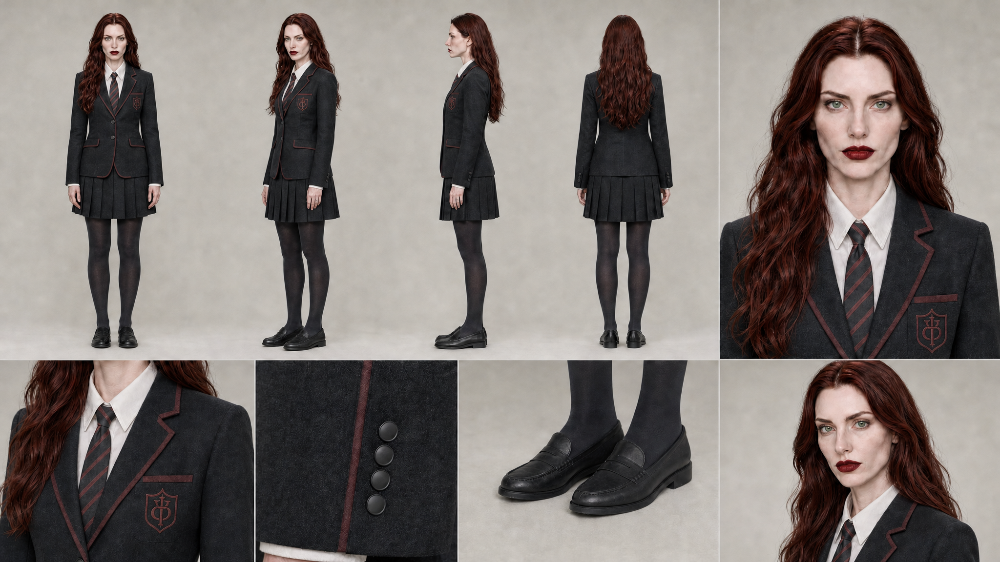

05 · The invitation
Back to the workflowAll stills · 01 · 02 · 03 · 04 · 05 · 06 · 07 · 08 · 09 · 10 · 11 · 11A · 12

The three references used for this frame



Full prompt used for this frame
Create one clean photorealistic 16:9 medium cinematic shot of Vivienne offering the empty chair beside her. Use all THREE references with distinct roles. This is a fresh reconstruction, not an edit of any previous invitation render. IMAGE 1: USER'S SCREENSHOT. This is the AUTHORITATIVE SEATING, CAST POSITION and COMPOSITION reference. Preserve this precise left-side arrangement, rather than inventing another classroom layout. Vivienne is seated foreground LEFT, empty coral chair foreground RIGHT at her SAME yellow desk. Immediately BEHIND THE EMPTY CHAIR is the man in the POWDER-BLUE uniform, dark curly hair, his body turned sideways and face toward screen right. Behind him, farther right and deeper, is the LILAC-uniformed dark-haired man READING an open book. Behind Vivienne is the long straight black-haired woman in PALE TEAL, turned toward her classmates and smiling. At far left is the partially cropped lilac-clad reader. Preserve the additional partly occluded rear classmates visible in the screenshot, their relative positions, hair, uniform colors and overlaps. No new front-row students, no rearranged background, no replacement cast, no all-reading row. Keep the blue man nearest behind the empty chair, not a cream-clad woman. Keep the teal woman behind Vivienne, not directly behind the empty chair. Keep the same window and door positions: leaded window behind the student group, sage and pink door at far RIGHT of the shot, never behind Vivienne. Preserve rows of yellow desks and coral chairs, and the books on Vivienne's foreground desk. IMAGE 2: ORIGINAL EMPTY ROOM PLATE. Use ONLY to resolve high-quality architectural materials, clean photographic texture, salmon/sage/yellow/coral palette and soft daylight. Do not use its empty seats to erase the background students from image 1. Do not replace image 1's tighter left-side framing with a centered wide room shot. IMAGE 3: ORIGINAL VIVIENNE CHARACTER SHEET. Exact face, green eyes, angular facial proportions, long rich auburn waves, pale skin, berry lips, charcoal blazer with dusty-red trim and shield crest, white blouse and striped tie. Preserve her identity without copying the studio background or sheet panels. ONLY STORY ACTION CHANGE from image 1: Vivienne turns her gaze slightly offscreen RIGHT toward Cassius and wears a subtle confident welcoming smile. Her LEFT arm, nearest the empty chair on screen RIGHT, reaches naturally sideways; her left hand rests gently on the TOP of the empty chair's coral back, relaxed anatomically correct fingers touching its top rail. Other hand rests on her desk. Show a plausible shoulder, elbow, wrist and hand with no stretching or distortion. Keep the empty chair fully unoccupied and clearly visible. Cassius and Linney are offscreen, absent from this composition. COMPOSITION: landscape 16:9 medium two-seat shot retaining the screenshot's spatial relationships and camera axis. Fit Vivienne, the entire empty chair back, her hand contact, and the relevant rear students. The portrait-shaped screenshot is a crop of the classroom: expand framing conservatively using original room reference without adding new rows or moving people. Preserve depth and student overlap, not just house colors. Rear students gently softer than Vivienne but visible and recognizable, with their established activities intact. FINISH: smooth, clean photographic appearance, natural skin and hair, softly resolved wool, smooth wall gradients and clean daylight. Screenshot is for geometry/casting only, not its pixel texture. No added grain, coarse noise, stippling, gritty filter, oversharpening or exaggerated cloth texture. No text, subtitles, labels, panels or overlays. One single film frame.
Revision method: rebuild from your seating screenshot and the original room and character references. Neither an earlier invitation render nor the rejected background layout was used.